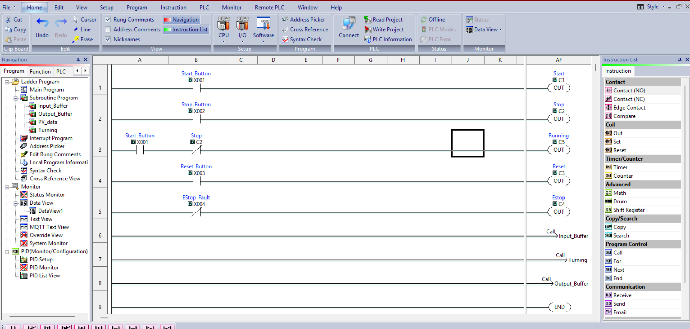
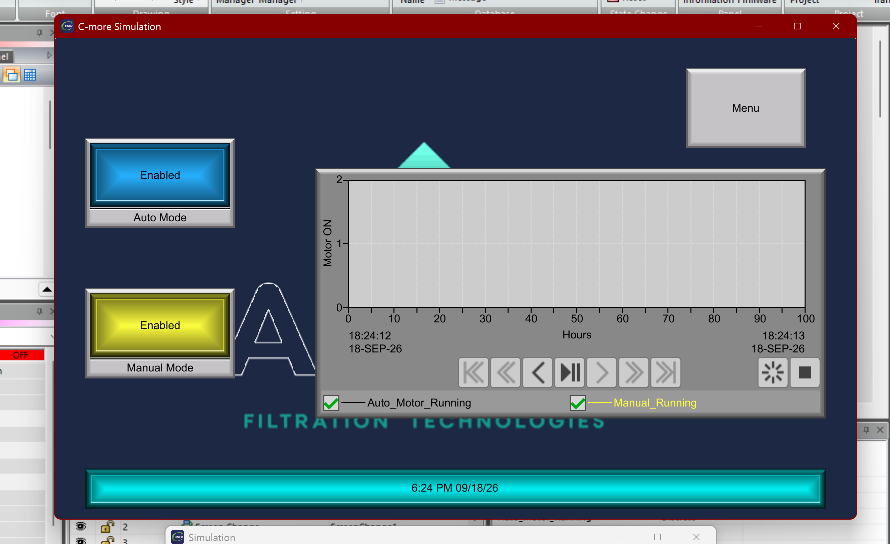
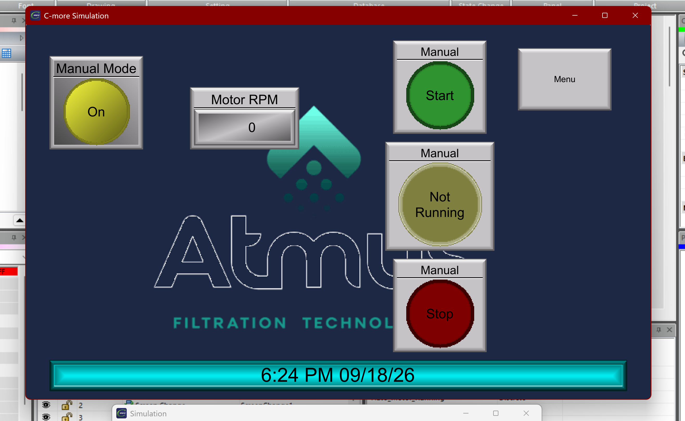
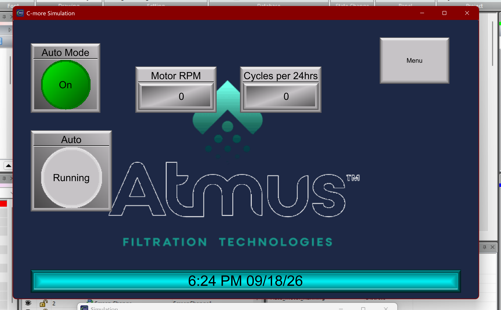
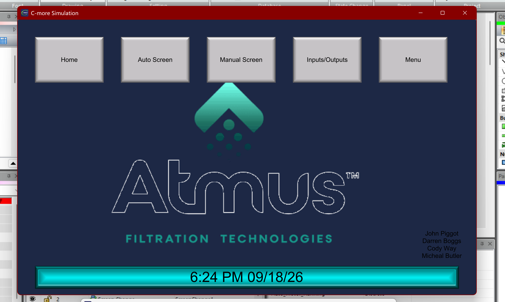
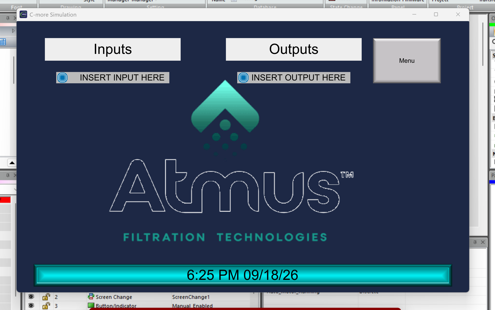
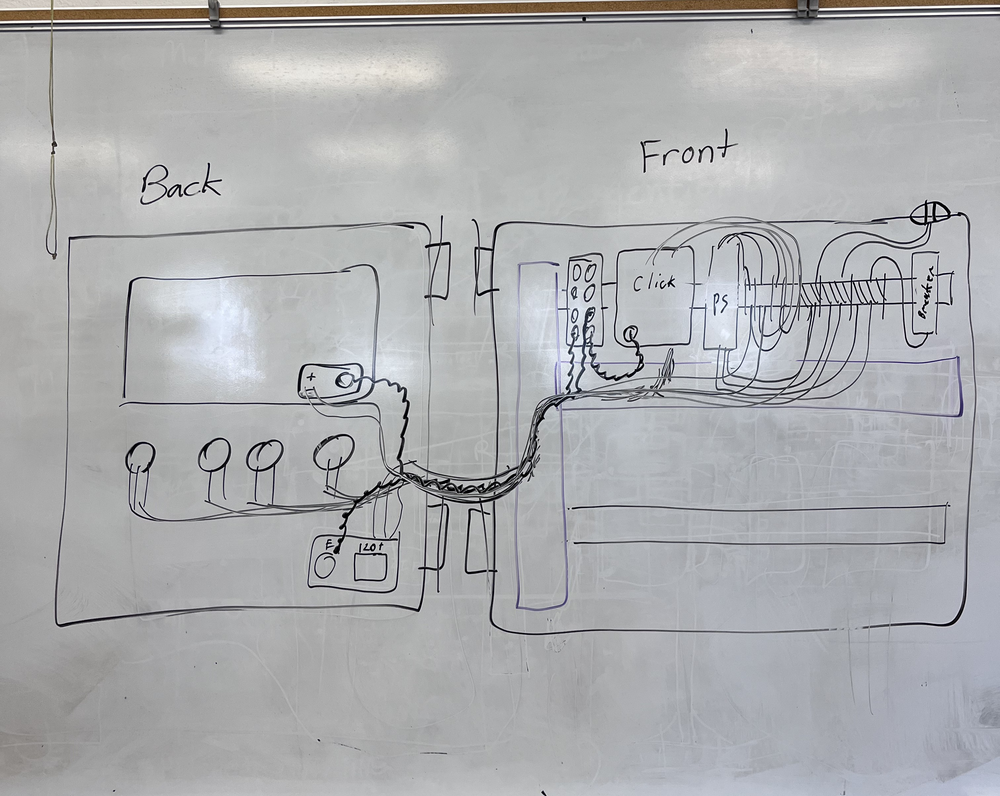
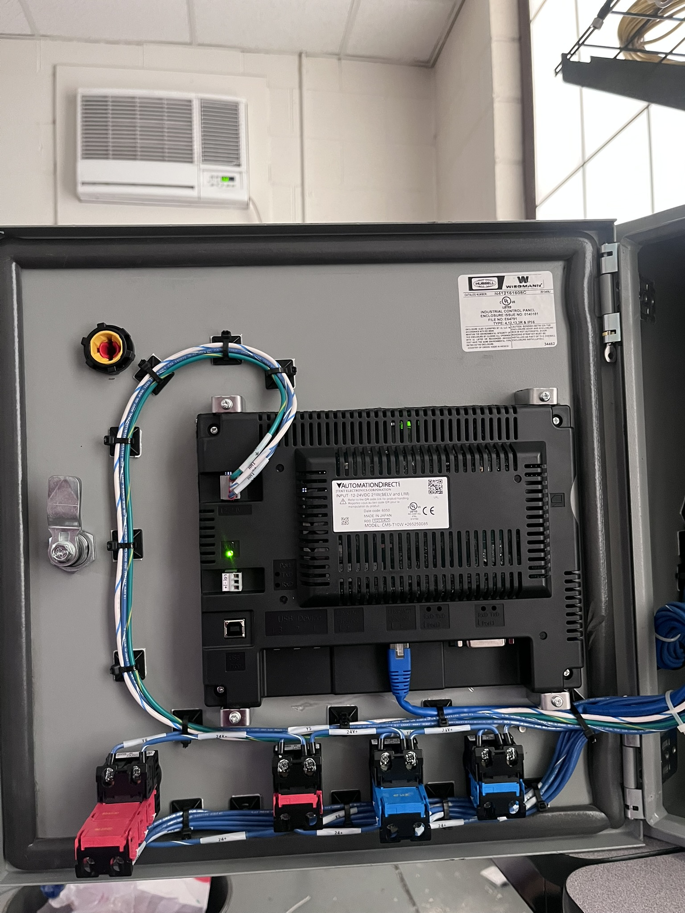
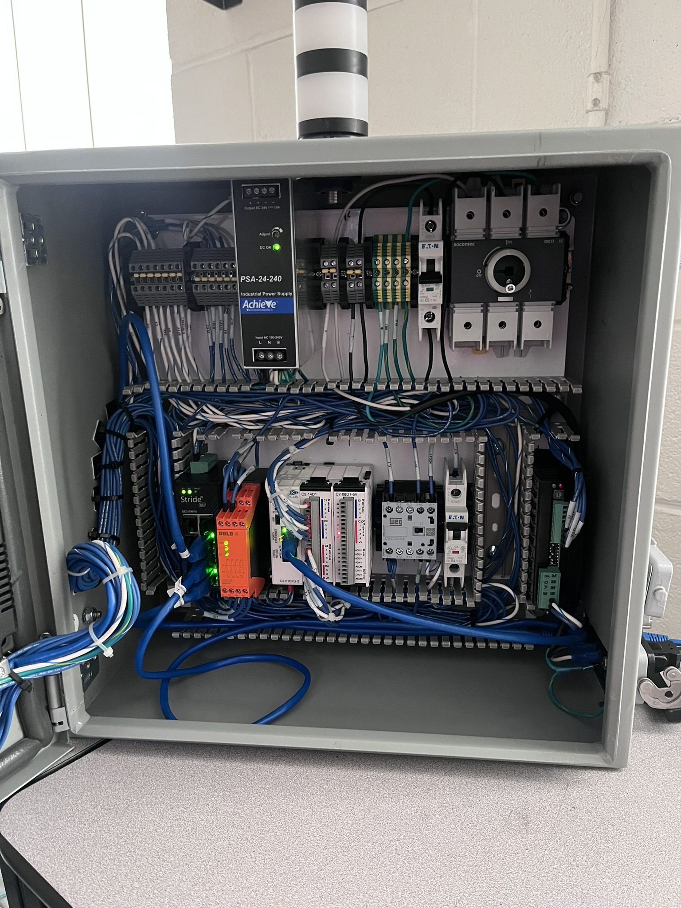
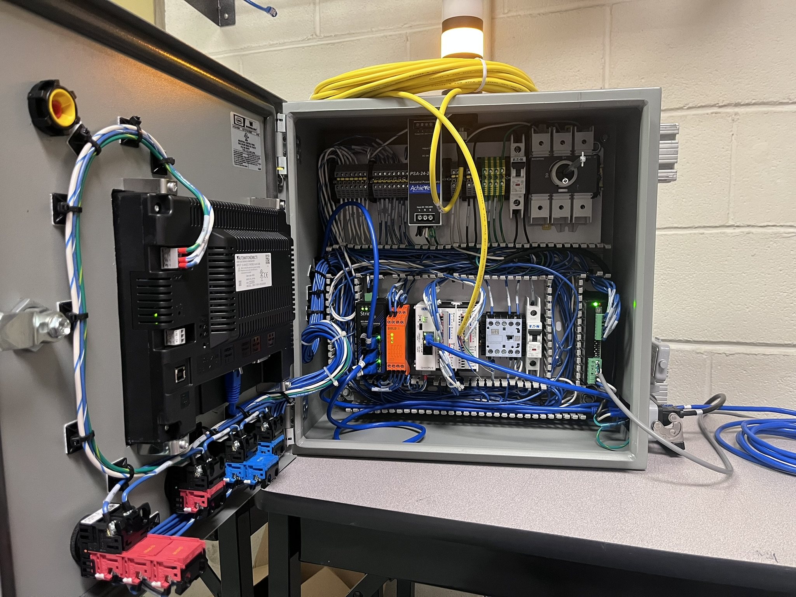

Senior Design
Automated Isocyanate Agitation System
Senior design project in progress for Atmus Filtration Technologies. The goal of the project is to automate an isocyanate agitation process that previously required manual rotation on a scheduled basis.
Project Overview
This system is being designed to rotate an agitator automatically, complete a required number of turns, and use encoder feedback to confirm that the expected motion occurred.
My Role
- PLC programming and sequence development
- HMI screen development
- Motor and gearbox selection
- Encoder integration
- Electrical enclosure layout
- Power distribution and wiring design
- Controls troubleshooting and system integration
System Requirements
- Complete 10 agitator rotations per 24 hours
- Confirm completed rotations using encoder feedback
- Operate at approximately 50 RPM
- Provide approximately 10 in-lb of required torque
- Provide manual controls through the HMI
- Use a compact industrial control enclosure
Controls & Automation
PLC Logic Development
The controls system uses a CLICK Plus PLC and C-more HMI to manage the automatic sequence, operator commands, interlocks, motor control, timing, and encoder confirmation. Initial PLC logic was developed to establish the sequence structure and rotation-confirmation process before final system implementation and testing.

Early PLC logic development for the automated agitation sequence.
HMI Development
The C-more HMI provides operators with manual controls, real-time equipment status, and clear feedback from the agitation system. Separate screens were developed for automatic operation, manual control, navigation, and I/O status to keep the interface simple and easy to use.

Main operator screen

Manual control screen

Auto control screen

Menu screen

System status I/O screen
Mechanical & Electrical Design
Motor & Gearbox Selection
Motor and gearbox options were evaluated based on torque, speed, physical size, control method, and compatibility with the available 24 VDC control system.
Electrical Design
The project includes enclosure layout, circuit protection, terminal blocks, power distribution, Ethernet communication, motor wiring, operator controls, and documentation for installation and troubleshooting.

Electrical schematic developed for the PLC cabinet.
Current Build & Testing
From Parts to a Working System
Once the parts arrived, we got straight to work. The team handled cutting, drilling, and mounting the external components while I focused on routing the cabinet wiring, running field connections, and landing each component into the control system.
This was the point where the project really came together. The cabinet went from a layout on paper to a fully wired control system with the PLC, HMI, motor drive, safety circuit, contactor, breakers, terminal blocks, and field wiring all integrated and ready for testing.
Functional Testing
The system has now reached functional testing. The safety circuit is operating correctly, the E-stop removes motor power as intended, and the operator controls are responding properly. Coding manual and automatic modes was my next step.
System Demonstration
The video below shows the system operating in both manual and automatic modes, testing the safety relay, contactor, and the corresponding Andon light for each mode.
Control Cabinet
Final wiring and component layout inside the control cabinet.

Completed door wiring

PLC and cabinet wiring

Full assembly